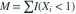

同一分段模型： （
（ ），
）， （
（ ）。20 个样本中有 13 个小于 1。
）。20 个样本中有 13 个小于 1。 的最大似然估计为？
的最大似然估计为？
（），（）。20 个样本中有 13 个小于 1。 的最大似然估计为？- A0.70
- B0.65
- C0.35
- D0.50
我已思考，展开答案与解析
正确答案：B
- 令

，似然中含参数的部分为 。 - 对数似然求导得 ，故估计为 。
易错提醒原始观测的具体小数在每个区间内不改变似然比。
JYSG · 432精选 · 册内复旦大学432·2016年·八(2)；PDF第32页（印刷页30）
原大题拆解